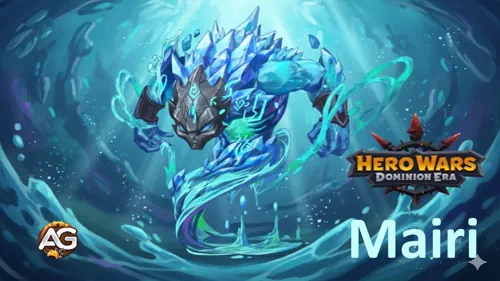
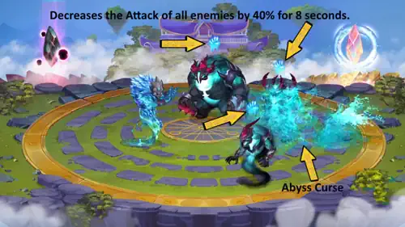
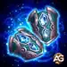
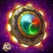

Guide Mairi: Maîtrisez Titan Marée Glaciaire - Hero Wars Dominion Era
- By: Alexandre Domingos. .
Êtes-vous prêt à libérer la puissance des mers gelées ? Découvrez Mairi, le Titan de soutien mystique dont les capacités glaciales peuvent renverser le cours de n’importe quelle bataille dans Hero Wars : Dominion Era. Avec ses vagues de soins et ses boucliers protecteurs, elle n’est pas seulement une soigneuse — elle est la véritable bouée de sauvetage de votre équipe lors des affrontements les plus difficiles.
Que vous affrontiez des adversaires redoutables dans les Guerres de Guilde ou que vous progressiez dans des chapitres de campagne exigeants, l’élément Marée Glaciaire de Mairi offre un avantage stratégique que peu de Titans peuvent égaler. Dans ce guide complet, nous allons analyser en détail ses compétences, les compositions d’équipe optimales et des stratégies avancées pour vous aider à exploiter tout son potentiel incroyable. Préparez-vous à découvrir pourquoi Mairi change totalement la donne !

Qui est Mairi ?
Mairi est l’incarnation du pouvoir curatif de l’océan, un Titan de soutien mystique qui canalise l’essence de l’élément Marée Glaciaire. Placée en ligne arrière, elle se spécialise dans le maintien en vie de ses alliés grâce à de puissants soins et à des capacités protectrices.
- Rôle : Soutien
- Élément : Eau (Marée Glaciaire)
- Position : Ligne arrière
- Puissance : 206 325
- Attaque : 1 045 101
- Santé : 10 961 947
- Armure élémentaire : 146 547
- Dégâts élémentaires : 479 475
Ce qui rend Mairi exceptionnelle, c’est sa capacité à maintenir votre équipe en vie lors de combats prolongés. Ses soins ne sont pas seulement réactifs — ils sont stratégiques, vous permettant de conserver l’avantage même face à des situations désespérées.
Grâce à ses statistiques de santé impressionnantes et à de solides dégâts élémentaires, Mairi prouve que les Titans de soutien peuvent être à la fois de véritables piliers défensifs et des contributeurs offensifs. Son élément Marée Glaciaire lui confère une synergie naturelle avec les autres Titans d’Eau, créant des combinaisons élémentaires dévastatrices.
Guide des compétences de Mairi - Hero Wars : Dominion Era
Comprendre les capacités de Mairi est essentiel pour exploiter pleinement son potentiel de soutien. Détaillons chaque compétence de manière simple et voyons comment elles aident à remporter les combats.
Compétence 1 : Malédiction des Abysses
Effet : Mairi libère une sombre malédiction depuis les profondeurs de l’océan qui affaiblit tous les Titans ennemis. Imaginez que la force de vos adversaires soit drainée, rendant leurs attaques beaucoup moins efficaces — comme s’ils combattaient avec des poids aux bras.
Fonctionnement : Lorsqu’elle est activée, cette compétence réduit l’Attaque de tous les ennemis de 40 % pendant 8 secondes. Cela signifie que chaque coup porté durant cette période inflige nettement moins de dégâts, offrant à votre équipe un énorme avantage défensif.
Pourquoi c’est crucial en PvP : En combat compétitif, réduire les dégâts ennemis de 40 % change complètement la partie ! Cette compétence peut neutraliser des attaquants très puissants lors de moments clés. Utilisez-la au bon moment face aux dégâts explosifs ou aux compétences ultimes adverses, et observez leur offensive s’effondrer. Priorité : Élevée

Astuce Pro d’Alexandre : La compétence de Mairi offre un avantage stratégique majeur en PvP, car pour réduire l’attaque ennemie de 40 %, il suffit d’avoir Mairi dans votre équipe, sans avoir besoin de la faire évoluer ni de dépenser des ressources en artefacts ou en skins. Elle est ainsi efficace aussi bien en donjons qu’en guerres de guilde.

Compétence 2 : Totem principal : Totem de l’Esprit de l’Eau
Pourquoi le Totem de l’Esprit de l’Eau est essentiel pour Mairi : En tant que Titan d’Eau, Mairi bénéficie automatiquement de ce totem lorsqu’elle est associée à au moins 2 autres Titans d’Eau. Il ne s’agit pas simplement de choisir la meilleure option, mais de profiter d’une synergie naturelle. Ce totem amplifie tout ce que Mairi fait de mieux : soigner et maintenir l’équipe en vie.
Avantages du Totem :
- Bénédiction des Profondeurs : S’active lorsque vous avez 3 Titans d’Eau ou plus. Soigne tous les Titans alliés tout en infligeant des dégâts aux ennemis proches pendant 10 secondes.
- Soins améliorés : Les soins sont répartis entre les Titans blessés, complétant parfaitement les compétences de soin de Mairi.
- Formule des dégâts : (Régénération totale de santé par activation : 595 687,5) répartie entre les Titans ayant besoin de soins.
- Bonus de statistiques : Augmente toutes les statistiques des Titans d’Eau, rendant les soins de Mairi plus puissants et ses barrières plus résistantes.
Priorité : Très Élevée — Indispensable pour maximiser les performances de Mairi en PvP. La combinaison de ses soins avec les soins de zone du totem crée une équipe extrêmement résistante.

Meilleure Fusion de Totem Élémentaire pour Mairi
Vous voulez renforcer au maximum la puissance défensive de Mairi ? La Fusion de Totem est votre arme secrète ! Considérez-la comme l’ajout de bonus spéciaux à une Mairi déjà très puissante. Ces fusions fonctionnent en synergie avec son Totem de l’Esprit de l’Eau (toujours actif en combat) pour créer des combinaisons dévastatrices capables de faire basculer les combats PvP en votre faveur.
Comment fonctionne la Fusion de Totem pour Mairi ?
Imaginez que vous amélioriez votre arme préférée dans un jeu. C’est exactement ce que fait la Fusion de Totem pour Mairi ! Dans la fenêtre de Fusion, vous choisissez entre des compétences Élémentaires ou Primordiales, sélectionnez la capacité souhaitée et investissez des Catalyseurs (ressources spéciales). Plus vous investissez de Catalyseurs, plus vos chances d’obtenir des compétences puissantes de haut niveau augmentent.
À savoir : Si vous possédez déjà une compétence et que vous la fusionnez à nouveau, vos chances d’obtenir une version encore meilleure augmentent ! Lorsque deux totems possèdent la même compétence, seule celle de niveau le plus élevé s’active en combat. Les compétences Élémentaires s’activent globalement sans temps de recharge, tandis que les compétences Primordiales ont des temps de recharge individuels par Titan selon des conditions spécifiques.
Astuce pro : Si le résultat de la fusion ne correspond pas au style de jeu de Mairi, vous pouvez le refuser et restaurer votre totem à son état précédent — aucun dégât permanent !
🥇 1ère place : Ère Glaciaire

Ère Glaciaire (Rang I)
Effet : Lorsque le totem de base de l’adversaire s’active, TOUS ses Titans sont gelés pendant 1 seconde et subissent un affaiblissement Fragilité qui augmente les dégâts reçus de 15,8 % pendant 5 secondes.
Pourquoi c’est PARFAIT pour Mairi : Vous vous souvenez de la Malédiction des Abysses de Mairi qui réduit l’attaque ennemie de 40 % ? Ère Glaciaire crée la combinaison ultime ! D’abord, elle gèle et affaiblit les ennemis (ils subissent plus de dégâts), puis la malédiction de Mairi fait en sorte qu’ils ne puissent presque plus riposter. C’est un véritable double K.-O. : ils sont gelés, affaiblis ET leur attaque est neutralisée !
Impact PvP : Cette fusion transforme Mairi d’un simple soutien défensif en véritable contrôleur du champ de bataille. Le gel d’1 seconde interrompt les combos ennemis, tandis que l’effet de fragilité permet à votre équipe d’infliger 15,8 % de dégâts supplémentaires. Combiné à la réduction d’attaque de 40 % de Mairi, les ennemis deviennent inoffensifs. Priorité : Très Élevée
🥈 2e place : Murmure des Falaises

Murmure des Falaises (Rang I)
Effet : Crée une barrière rocheuse qui protège TOUS les alliés contre les attaques. La barrière absorbe 450 625 dégâts et renvoie le double des dégâts aux attaquants !
Pourquoi elle synergise avec Mairi : Le rôle de Mairi est de maintenir l’équipe en vie, et cette fusion lui apporte une couche de protection supplémentaire. C’est comme offrir à toute votre équipe un bouclier qui bloque les dégâts tout en frappant deux fois plus fort en retour ! Pendant que Mairi affaiblit les attaques ennemies avec la Malédiction des Abysses, cette barrière garantit que les dégâts qui passent quand même punissent davantage l’attaquant que votre équipe.
Impact PvP : Parfaite pour survivre face aux équipes à dégâts explosifs. Lorsque les ennemis déclenchent leurs compétences ultimes, ce bouclier rocheux absorbe l’impact et renvoie des dégâts dévastateurs. Combiné à la réduction de puissance d’attaque de Mairi, vous créez une forteresse presque imprenable. Priorité : Élevée
🥉 3e place : Murmure des Profondeurs

Murmure des Profondeurs (Rang I)
Effet : Crée un tourbillon de soin qui restaure la santé des alliés et inflige des dégâts aux ennemis proches pendant 10 secondes. Chaque activation distribue 50 312 points de santé au total entre les Titans les plus blessés, tout en infligeant 50 312 dégâts aux ennemis.
Pourquoi elle complète Mairi : C’est le soutien de soin de Mairi sous stéroïdes ! Puisque Mairi se concentre déjà sur la survie de l’équipe, Murmure des Profondeurs multiplie son potentiel de soin. C’est comme avoir un deuxième soigneur dans l’équipe — qui inflige aussi des dégâts aux ennemis. La distribution intelligente des soins aide automatiquement les Titans les plus blessés.
Impact PvP : Excellente pour les combats prolongés où la survie fait la différence. Les soins continus sur 10 secondes, combinés aux bonus défensifs de Mairi, offrent une endurance exceptionnelle. Votre équipe finit simplement par survivre à ses adversaires. Priorité : Moyenne-Élevée
Meilleure Fusion de Totem Primordial pour Mairi
Explorons maintenant les Fusions Primordiales — elles se déclenchent sous des conditions spécifiques et possèdent des temps de recharge individuels par Titan. Pour Mairi, nous recherchons des fusions qui s’activent fréquemment et renforcent ses capacités de soutien !
🥇 1ère place : Pulsation des Anciens

Pulsation des Anciens (Rang I)
Effet : Chaque fois qu’un Titan allié utilise une capacité, il se soigne de 112 000 points de santé. Peut s’activer au maximum une fois toutes les 21 secondes.
Pourquoi c’est INCROYABLE pour Mairi : Mairi utilise constamment sa Malédiction des Abysses pour affaiblir les ennemis. Pulsation des Anciens récompense ce style de jeu actif en soignant Mairi chaque fois qu’elle ou ses alliés lancent une capacité ! C’est comme recevoir une potion de soin gratuite toutes les 21 secondes simplement en jouant normalement. Étant donné que les Titans de soutien utilisent souvent leurs compétences, cette fusion s’active régulièrement tout au long du combat.
Impact PvP : Cette fusion augmente considérablement la survivabilité de Mairi. En tant que soutien en ligne arrière, elle est souvent ciblée en priorité, mais Pulsation la maintient en vie grâce à des soins constants. Plus votre équipe utilise de capacités, plus la valeur de cette fusion augmente. Dans les combats prolongés, Mairi peut être soignée plusieurs fois, devenant presque impossible à éliminer. Priorité : Très Élevée
🥈 2e place : Triple Cycle

Triple Cycle (Rang I)
Effet : Crée un cycle réactif : si Mairi reçoit un bouclier → elle se soigne (50 400 PV/sec). Si elle reçoit un soin → son attaque augmente (+5 600). Si elle reçoit un bonus → elle gagne un bouclier (24 500 de durabilité). Chaque effet dure 2 secondes.
Pourquoi c’est polyvalent pour Mairi : C’est le couteau suisse des fusions ! Comme Mairi reçoit des soins via la Bénédiction des Profondeurs du Totem de l’Esprit de l’Eau, Triple Cycle transforme ces soins en bonus d’attaque. Lorsqu’un allié lui applique un bouclier, elle reçoit des soins supplémentaires. Lorsqu’elle reçoit un bonus quelconque, elle obtient un bouclier protecteur. C’est un cycle auto-entretenu de bonus !
Impact PvP : Triple Cycle transforme Mairi en Titan polyvalent. L’alternance constante entre soins, bonus d’attaque et boucliers la rend imprévisible et difficile à contrer. Bien que son rôle principal reste le soutien, le bonus d’attaque lui permet de contribuer davantage aux dégâts. Priorité : Élevée
🥉 3e place : Égide Écho

Égide Écho (Rang I)
Effet : Lorsqu’un bouclier de votre équipe se brise, un nouveau bouclier équivalent à 4,2 % de la santé maximale du Titan est immédiatement appliqué pendant 5 secondes. A une chance d’activation de 20 %.
Pourquoi elle protège l’équipe de Mairi : Cette fusion est une assurance pour vos boucliers ! Lorsque l’équipe de Mairi reçoit des boucliers et qu’ils sont brisés sous les attaques ennemies, Égide Écho peut instantanément en créer un nouveau. C’est comme avoir des boucliers de secours prêts à être déployés. Pour une Titan axée sur la défense comme Mairi, cela prolonge considérablement la robustesse de l’équipe.
Impact PvP : Particulièrement efficace contre les équipes à dégâts explosifs qui cherchent à briser rapidement les boucliers. Le remplacement automatique frustre les adversaires et offre de précieuses secondes supplémentaires à Mairi pour soutenir l’équipe. Même si la chance de 20 % signifie que l’effet ne se déclenche pas toujours, lorsqu’il le fait, il peut faire la différence entre un Titan vaincu et un Titan survivant. Priorité : Moyenne-Élevée
Meilleure Skin pour le Titan Mairi - Hero Wars : Dominion Era
Les skins offrent des bonus de statistiques cruciaux qui peuvent améliorer drastiquement les performances de Mairi. Voyons quelle skin prioriser pour l’évolution en fonction de l’efficacité en combat.
Skin par défaut
Santé : +1 022 985
Priorité d’évolution PvP : Très Élevée – C’est la skin PRIORITAIRE de Mairi ! Plus d’un million de points de santé fonctionne contre TOUS les types de dégâts : Physiques, Purs et Élémentaires (Feu, Eau, Terre, Lumière, Ténèbres). Comme Mairi est un soutien en ligne arrière souvent ciblé en premier, cette énorme réserve de santé lui permet de survivre suffisamment longtemps pour lancer plusieurs Malédictions des Abysses et soutenir l’équipe tout au long du combat. La protection universelle est toujours supérieure à une armure situationnelle.
Priorité d’évolution en Donjon : Très Élevée – En donjon, survivre à de multiples vagues avec des compositions ennemies variées est essentiel. L’énorme bonus de santé permet à Mairi de tenir sur la durée contre N’IMPORTE quel type d’ennemi, quel que soit son élément. C’est votre priorité n°1 pour le contenu de donjon.
Skin Champion
Armure élémentaire : +49 065
Priorité d’évolution PvP : Élevée – Limitation importante : cette armure protège UNIQUEMENT contre les Titans de Feu. Elle ne protège PAS contre les Titans d’Eau, de Terre, de Lumière (Solaris) ou de Ténèbres (Tenebris). Bien qu’utile contre les équipes axées Feu, son caractère situationnel la rend moins critique que la Santé universelle de la Skin par défaut. À faire évoluer en second, après avoir maximisé la Skin par défaut.
Priorité d’évolution en Donjon : Moyenne-Élevée – Utile face aux Titans de Feu en donjon, mais comme vous rencontrerez aussi des ennemis d’Eau, de Terre, de Lumière et de Ténèbres, cette armure offre une protection limitée. La Santé universelle de la Skin par défaut reste bien plus fiable pour la progression en donjon.
Priorité d’évolution des Artéfacts de Mairi - Hero Wars : Dominion Era
Les artéfacts changent complètement la donne pour Mairi ! Savoir lesquels améliorer en priorité peut faire la différence entre un soutien moyen et un véritable contrôleur du champ de bataille.

Bracelets de Siungur (Artéfact d’arme)
Dégâts élémentaires : +479 475
Augmente les dégâts infligés par les attaques et compétences contre les Titans de Feu. Devient moins efficace lorsque le Titan attaquant affronte des Titans de niveau supérieur.
Priorité d’évolution PvP : Faible – Mairi n’est pas un dealer de dégâts principal, mais un affaiblisseur et un soutien. Sa Malédiction des Abysses ne dépend pas des statistiques de dégâts : elle réduit toujours l’attaque ennemie de 40 %, quel que soit votre DPS. Cet artéfact apporte peu à son rôle principal. À améliorer EN DERNIER parmi les artéfacts de Mairi, uniquement après avoir maximisé les options défensives.
Priorité d’évolution en Donjon : Faible – En donjon, maintenir Mairi en vie sur plusieurs vagues est bien plus important que d’augmenter légèrement ses dégâts. Son rôle est de survivre et d’affaiblir, pas d’infliger des dégâts. À investir uniquement après avoir complètement maximisé le Sceau d’Équilibre et la Couronne de l’Eau.
 - Hero Wars: Dominion Era")
Couronne de l’Eau (Artéfact de défense)
Armure élémentaire : +97 482
Lorsqu’un Titan est assigné à l’équipe de Défense, l’Armure Élémentaire le protège contre les attaques des Titans de Feu. Devient moins efficace lorsque le Titan défenseur subit des dégâts de Titans de niveau supérieur.
Priorité d’évolution PvP : Moyenne-Élevée – Limitation critique : cette armure protège UNIQUEMENT contre les Titans de Feu. Elle ne protège PAS contre les Titans d’Eau, de Terre, de Lumière (Solaris) ou de Ténèbres (Tenebris). Bien que +97 482 d’Armure Élémentaire soit très efficace contre les équipes Feu, son caractère situationnel la rend moins universelle que la Santé du Sceau d’Équilibre. À améliorer en second, après avoir maximisé le Sceau d’Équilibre.
Priorité d’évolution en Donjon : Élevée – En donjon, vous affronterez des compositions ennemies variées. Même si cet artéfact excelle contre les Titans de Feu, il n’offre AUCUNE protection contre les ennemis d’Eau, de Terre, de Lumière ou de Ténèbres. Toujours utile pour les vagues Feu, mais la Santé universelle du Sceau d’Équilibre reste prioritaire pour la survie globale.

Sceau d’Équilibre
Santé : +3 995 583
Attaque physique : +299 673,8
Ajoute des statistiques bonus à un Titan.
Priorité d’évolution PvP : Très Élevée – C’est l’artéfact n°1 de Mairi ! L’énorme bonus de santé (+3,9 millions !) fonctionne contre TOUS les types de dégâts : Physiques, Purs et tous les éléments (Feu, Eau, Terre, Lumière, Ténèbres). Contrairement à une armure situationnelle, cette santé maintient Mairi en vie quelle que soit la composition ennemie. Plus elle survit longtemps, plus elle lance de Malédictions des Abysses et plus sa valeur augmente. Le bonus d’Attaque physique est un plus, mais secondaire. À améliorer EN PREMIER !
Priorité d’évolution en Donjon : Très Élevée – Près de 4 millions de santé supplémentaires permettent à Mairi de survivre à plusieurs vagues de donjon contre N’IMPORTE quel type d’ennemi. Cette survivabilité universelle est indispensable pour le contenu difficile. Maximisez cet artéfact avant tout le reste pour garantir que Mairi reste le pilier de votre équipe sur toute la durée des donjons.
Résumé des priorités d’artéfacts d’Alexandre :
- 1er : Sceau d’Équilibre – Santé universelle massive = survie contre tous les ennemis = plus d’affaiblissements
- 2e : Couronne de l’Eau – Armure élémentaire utile uniquement contre les Titans de Feu (situationnelle mais efficace)
- 3e : Bracelets de Siungur – Les dégâts ne sont pas le rôle de Mairi ; à améliorer en dernier
Contres de Mairi – Les Titans qui la dominent
Chaque Titan a ses faiblesses, et comprendre les contres de Mairi est essentiel, que ce soit pour jouer avec elle ou contre elle. En tant que Titan d’Eau, Mairi subit un désavantage fondamental face aux Titans de Terre en raison du système de triangle élémentaire de Hero Wars: Dominion Era.
Pourquoi les Titans de Terre contrent Mairi :
Le système élémentaire fonctionne comme pierre-feuille-ciseaux : la Terre bat l’Eau, l’Eau bat le Feu, le Feu bat la Terre. Cela signifie que les Titans de Terre infligent des dégâts considérablement accrus à Mairi tout en subissant des dégâts réduits de sa part. Même avec son énorme réserve de points de vie et ses capacités défensives, Mairi a du mal face aux adversaires de l’élément Terre.
🌳 Principaux contres Terre :

Angus (Titan de Terre)
Pourquoi Angus domine Mairi : En tant que puissant tank de Terre, Angus subit naturellement moins de dégâts des attaques de Mairi tout en infligeant des dégâts amplifiés en retour. Sa grande robustesse combinée à l’avantage élémentaire le rend extrêmement difficile à gérer pour Mairi. Même si la Malédiction des Abysses réduit son attaque de 40 %, le bonus élémentaire compense souvent, permettant à Angus de mettre une forte pression sur Mairi.
Stratégie de contre : Évitez les confrontations directes. Concentrez-vous sur le soutien des Titans non-Eau de votre équipe pour éliminer Angus, car les affaiblissements de Mairi continueront de l’affaiblir pour vos alliés.

Avalon (Titan de Terre)
Pourquoi Avalon domine Mairi : L’élément Terre d’Avalon lui confère le même avantage fondamental face à Mairi. Ses compétences infligent des dégâts bonus aux Titans d’Eau, tandis que les attaques de Mairi sont affaiblies contre lui. Ce matchup élémentaire peut rapidement devenir fatal pour Mairi si elle devient la cible principale d’Avalon.
Stratégie de contre : Positionnez Mairi avec soin et comptez sur vos Titans de Terre ou de Feu pour engager Avalon. Mairi doit se concentrer sur le maintien de l’équipe en vie plutôt que d’essayer d’infliger des dégâts directs à Avalon.

Sylva (Titan de Terre)
Pourquoi Sylva domine Mairi : L’affinité Terre de Sylva en fait un prédateur naturel des Titans d’Eau comme Mairi. L’avantage élémentaire garantit que les attaques de Sylva frappent plus fort tout en subissant moins de dégâts des contre-attaques de Mairi. Dans les combats prolongés, cet avantage s’accumule, rendant presque impossible la survie de Mairi sous la pression de Sylva.
Stratégie de contre : Utilisez la mobilité et le positionnement de Mairi pour éviter la portée de Sylva. Laissez les dégâts de votre équipe s’occuper de Sylva pendant que Mairi se concentre sur le soutien à distance en toute sécurité.

Verdoc (Titan de Terre)
Pourquoi Verdoc domine Mairi : L’élément Terre de Verdoc lui confère le même avantage de contre. Ses compétences sont amplifiées contre les cibles Eau comme Mairi, tandis que les soins et affaiblissements de Mairi ne suffisent pas à stopper l’assaut de Verdoc. Le déséquilibre élémentaire signifie que Verdoc peut souvent éliminer Mairi avant qu’elle n’apporte une valeur significative à son équipe.
Stratégie de contre : Priorisez un positionnement défensif et appuyez-vous sur les affaiblissements globaux de Mairi pour affaiblir Verdoc au profit de vos alliés. N’essayez pas de l’échanger directement : concentrez-vous sur la survie et le soutien.

Eden (Super Titan de Terre)
Pourquoi Eden domine Mairi : Eden est le pire cauchemar de Mairi. En tant que Super Titan de l’élément Terre, Eden combine une puissance écrasante avec l’avantage élémentaire face aux Titans d’Eau. Ses compétences infligent des dégâts dévastateurs à Mairi tout en encaissant facilement ses attaques. Même la Malédiction des Abysses de Mairi peine à neutraliser la menace d’Eden.
Stratégie de contre : Face à Eden, le meilleur rôle de Mairi est le pur soutien : gardez vos distances, appliquez la Malédiction des Abysses pour réduire les dégâts d’Eden pour l’équipe, et concentrez-vous entièrement sur la survie des alliés. N’engagez jamais Eden directement. Envisagez des compositions avec des Titans de Feu ou à élément neutre pour gérer Eden pendant que Mairi soutient l’arrière-garde.
Conseils de contre d’Alexandre :
- Conscience élémentaire : Vérifiez toujours la composition ennemie avant le combat. Si vous voyez plusieurs Titans de Terre, Mairi n’est peut-être pas le meilleur choix.
- Synergie d’équipe : Associez Mairi à des Titans de Feu ou à élément neutre capables de gérer les menaces Terre pendant qu’elle se concentre sur le soutien.
- Le positionnement compte : Gardez Mairi en arrière-ligne, loin des Titans de Terre. Ses affaiblissements sont globaux, elle n’a donc pas besoin d’être proche pour être efficace.
- Concentrez-vous sur la valeur : Même face à ses contres, la réduction d’attaque de 40 % de Mairi affecte toute l’équipe ennemie. Cherchez à maximiser cette utilité plutôt que de gagner le duel élémentaire.
Meilleures équipes pour Mairi – Hero Wars: Dominion Era
Mairi brille lorsqu’elle est associée à des Titans qui maximisent ses capacités de soutien et compensent ses faiblesses. Voici la composition d’équipe ultime qui transforme Mairi en une force inarrêtable.
| Meilleures équipes pour Mairi – Hero Wars: Dominion Era | ||||
|---|---|---|---|---|
|
|
|
|
|
|
|
|
Murmure des Roches |
Pouls des Anciens |
||
Stratégie de composition d’équipe
Tenebris (Super Titan des Ténèbres – Briseur de tanks) : Super Titan d’élite en première ligne, spécialisé dans la destruction des tanks ennemis grâce à des dégâts dévastateurs. Son élément Ténèbres apporte un équilibre à l’équipe en évitant les contres élémentaires. L’incroyable durabilité de Tenebris se combine parfaitement avec la réduction d’attaque de 40 % de Mairi, le transformant en une forteresse inarrêtable.
Hypérion (Super Titan d’Eau – Dégâts & Soins) : Super Titan puissant qui combine d’énormes dégâts d’Eau avec des capacités de soin d’équipe. Il bénéficie grandement du soutien de Mairi tout en apportant une excellente survie. Pendant que Mairi affaiblit les ennemis, Hypérion capitalise pour infliger d’énormes dégâts tout en maintenant l’équipe en bonne santé.
Mairi (Support Eau) : Le cœur de cette composition. Sa Malédiction des Abysses réduit l’attaque de tous les ennemis de 40 %, tandis que le Totem de l’Esprit de l’Eau soigne toute l’équipe. Ses affaiblissements rendent toute l’équipe plus résistante et plus sûre.
Nova (Support/Dégâts – Contrôle par étourdissement) : Titan polyvalent qui fournit un contrôle de foule via de puissants étourdissements, perturbant les formations ennemies et gagnant un temps précieux.
Sigurd (Tank Eau – Bouclier d’invincibilité) : Tank Eau résistant avec un bouclier d’invincibilité emblématique de 5 secondes, le rendant temporairement immunisé contre tous les dégâts. Son élément Eau renforce la synergie avec Mairi et Hyperion pour une activation optimale du Totem de l’Eau.
Pourquoi cette équipe fonctionne :
- Équilibre élémentaire : 1 Ténèbres + 3 Eau + 1 Feu crée une puissante synergie du Totem de l’Eau tout en conservant une couverture Feu contre les menaces Terre.
- Synergie triple Eau : Avec Mairi, Hypérion et Sigurd, le Totem de l’Eau atteint une efficacité maximale.
- Double tank : Tenebris et Sigurd absorbent des quantités massives de dégâts pendant que Mairi les maintient en vie.
- Contrôle & survie : Les étourdissements de Nova et les soins d’Hypérion, combinés au soutien de Mairi, assurent une excellente endurance.
- Synergie avec les fusions de totems : Murmure des Roches fournit des boucliers réfléchissant les dégâts, tandis que le Pouls des Anciens soigne Mairi toutes les 21 secondes.
- Puissance des Super Titans : Deux Super Titans offrent des dégâts et une durabilité écrasants.
Conclusion : maîtrisez Mairi et dominez Hero Wars Dominion Era
Mairi s’impose comme l’un des Titans de soutien les plus impactants de Hero Wars: Dominion Era. Sa réduction d’attaque de 40 % via la Malédiction des Abysses est immédiatement efficace sans investissement lourd, ce qui la rend précieuse même à bas niveau de développement. Combinée à la synergie du Totem de l’Eau et à des compositions stratégiques avec Tenebris, Hypérion et Sigurd, Mairi devient une force inarrêtable qui maintient votre équipe en vie tout en neutralisant les adversaires.
Concentrez vos priorités d’évolution sur l’artefact Sceau d’Équilibre en premier, suivi de l’énorme bonus de points de vie du skin par défaut. Associez-la à au moins deux autres Titans d’Eau pour maximiser l’efficacité du totem, et observez comment ses soins et affaiblissements créent une forteresse imprenable. Que vous gravissiez les rangs des Guerres de Guilde ou conquériez les donjons, la valeur stratégique de Mairi en fait un ajout essentiel à toute équipe sérieuse. Commencez à développer votre Mairi dès aujourd’hui !

Explorez de nouveaux héros en vedette !
 Guide Asherona et Pyro pour Hero Wars: Dominion Era(EN)
Guide Asherona et Pyro pour Hero Wars: Dominion Era(EN)
 Guide Nova pour Hero Wars: Dominion Era(EN)
Guide Nova pour Hero Wars: Dominion Era(EN)
 Guide du Titan Sigurd : Débloquez l'Invincibilité pour Hero Wars Dominion Era(EN)
Guide du Titan Sigurd : Débloquez l'Invincibilité pour Hero Wars Dominion Era(EN)
Donnez votre avis !
Avez-vous aimé notre Guide du Titan Mairi pour Hero Wars: Dominion Era (Web & Facebook) ? Y a-t-il quelque chose que vous n'avez pas compris ou souhaitez-vous suggérer des modifications ? Nous vous invitons à rejoindre notre section commentaires sur la page du blog Alexandre Games. N'hésitez pas à exprimer votre opinion, clarifier vos doutes et partager vos suggestions.
Cliquez sur le bouton ci-dessous pour commencer :